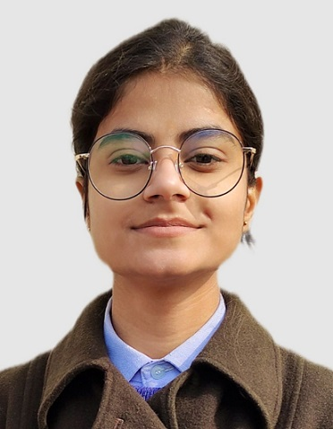

contact: Nishitajangid29@gmail.com
LinkedIn: linkedin.com/in/nishitajangid29
Github: github.com/Nishita029
|  |
I am an aspiring software Developer, having keen interest in problem solving and Development. Looking for an opportunity that will allow me to contribute to in innovative projects. Proficient in Data Structures, Algorithms, and modern development practices, with a focus on writing clean and efficient code. Passionate about learning new technologies and applying them to solve real-world challenges. Experienced in frontend development and database management, with a growing interest in full-stack and machine learning applications. Motivated to collaborate in dynamic teams, contribute innovative ideas, and continuously enhance my technical expertise. Adaptable, quick learner, and eager to take on responsibilities that push my boundaries as a developer. |
Sep'24 - Mar'25
Developed a machine learning-powered web application that predicts customer churn with an accuracy of 91%. The model was trained on historical customer behavior and demographic data, applying techniques such as feature engineering, encoding, and scaling to ensure robust performance. The web app provides an interactive interface where users can input customer details and instantly receive churn predictions. This project demonstrates the integration of data science, machine learning, and web development to solve a real-world business problem, helping organizations make proactive decisions to improve customer retention.
Github Link: Customer_Churn_Prediction
Built a full-featured video streaming web application inspired by YouTube, allowing users to browse, search, and watch videos with an intuitive UI. Implemented core functionalities such as video upload, playback, likes, comments, and subscriptions to mimic the real platform. Focused on responsive design, smooth navigation, and performance optimization to deliver a seamless user experience. This project highlights skills in frontend development, UI/UX design, and API integration while showcasing the ability to replicate complex, real-world applications.
Github Link: YouTube Clone
I just started after 12th.
I cracked the CUET exam and got this college.
This is the most desired field now a days which will be in industry for longest period of time.